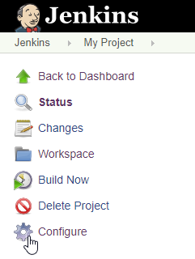
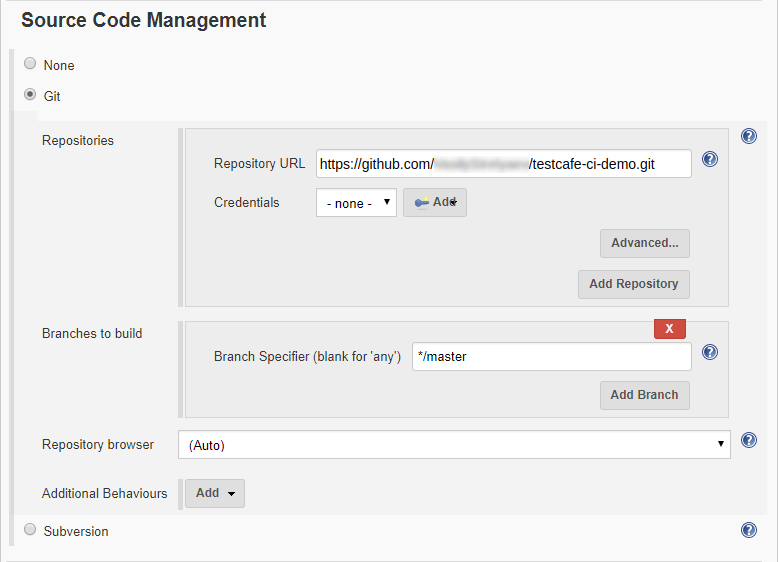
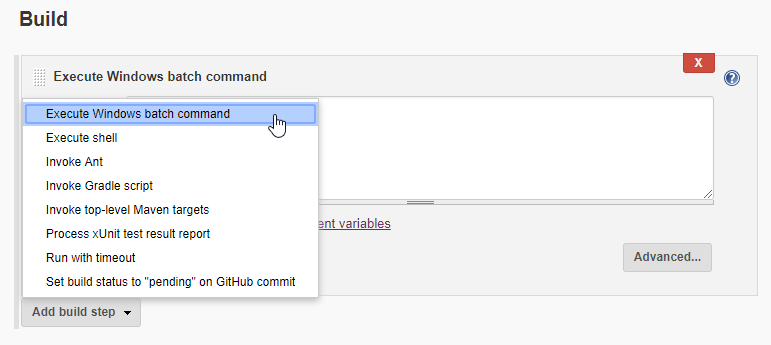
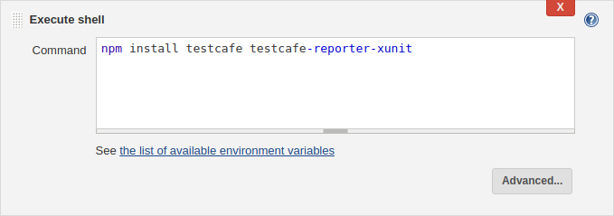
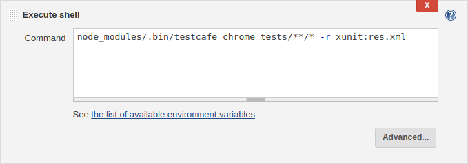
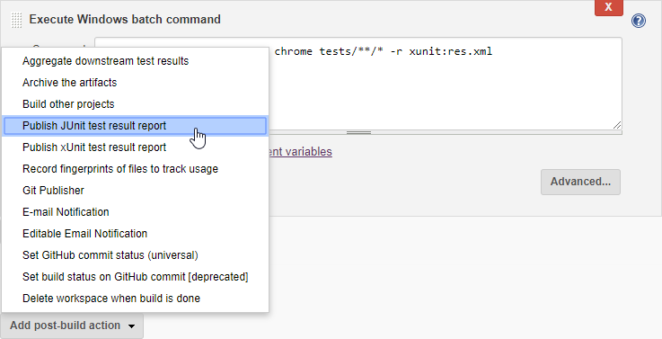
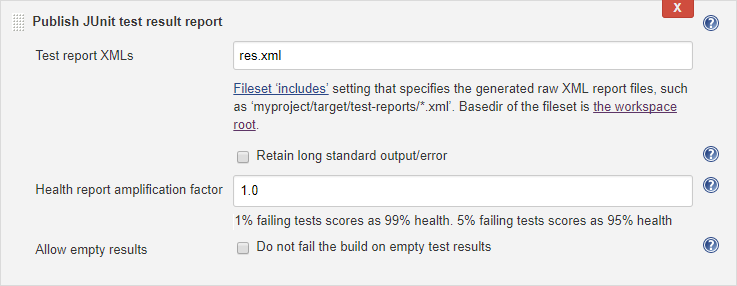
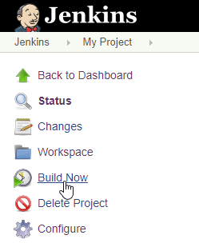
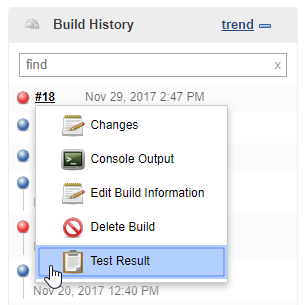
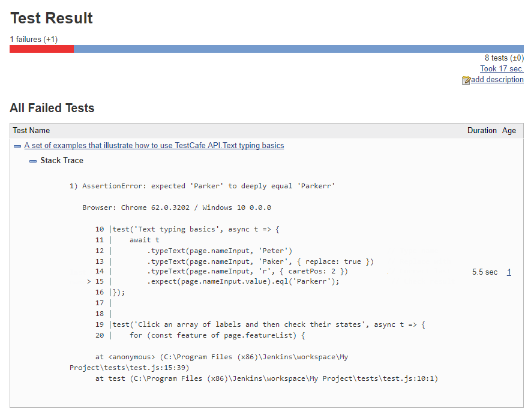

Integrate TestCafe with Jenkins
TestCafe has an extensive command line interface that allows it to fit well in any popular continuous integration system.
This topic shows how you can integrate TestCafe tests into project build process in Jenkins.
You may also like this TestCafe plugin for Jenkins that attaches screenshots and videos to the Jenkins test results page.
Enable Jenkins to Start the Browser UI (macOS and Linux) #
The default Jenkins configuration on macOS and Linux does not allow the CI system to start the local browser's UI. This section describes how to give Jenkins these permissions.
You can skip these steps if you use headless browsers, cloud testing services or the Xvfb server (on Linux).
The Jenkins installer overwrites permission settings during upgrade. Download and replace
jenkins.warto upgrade Jenkins, or repeat the steps below after you run the installer.
Obtain Permissions on macOS #
Stop Jenkins:
launchctl unload /Library/LaunchDaemons/org.jenkins-ci.plistOpen the
org.jenkins-ci.plistfile in a text editor:sudo nano /Library/LaunchDaemons/org.jenkins-ci.plistFind the
USER_NAMEoption and change its value to the username under whose account macOS is started:<key>USER_NAME</key> <string>peter.p</string>Find the
JENKINS_HOMEkey that specifies the Jenkins home directory. Copy the directory content to a local user's directory and specify the new path under theJENKINS_HOMEkey:<key>JENKINS_HOME</key> <string>/users/peter.p/jenkins/</string>Close the file and save your changes.
Change the Jenkins temporary directory:
sudo defaults write /Library/Preferences/org.jenkins-ci tmpdir "/tmp"Change the
/var/log/jenkinsfile ownership to your account:sudo chown peter.p /var/log/jenkinsStart Jenkins:
launchctl load /Library/LaunchDaemons/org.jenkins-ci.plist
Obtain Permissions on Linux #
Stop Jenkins:
sudo systemctl stop jenkins.serviceOpen the
/etc/default/jenkinsfile in a text editor:sudo nano /etc/default/jenkinsSpecify your username in the
JENKINS_USERvariable:JENKINS_USER=peter.pThen close the file and save your changes.
Change the Jenkins directory ownership to your account:
sudo chown peter.p /var/log/jenkins sudo chown peter.p /var/lib/jenkins sudo chown peter.p /var/run/jenkins sudo chown peter.p /var/cache/jenkinsStart Jenkins:
sudo systemctl start jenkins.service
Step 1 - Install Node.js Plugin #
Follow the instructions from Jenkins documentation to install a Node.js plugin.
Configure this plugin as described in the Usage section on the plugin page. Ensure that you have added a Node.js installation on the Global Tool Configuration page and checked the Provide Node & npm bin/ folder to PATH checkbox in your build configuration.
Step 2 - Fetch Test Code From a Repository #
This tutorial uses tests published in the testcafe-ci-demo GitHub repository. Fork it before you start.
You can find plugins for other source control systems on the Jenkins Plugins website in the Source code management category.
Open your project and choose Configure from the right pane.

Scroll down to the Source Code Management section and select Git, then specify the Repository URL.

Step 3 - Add a Command to Install TestCafe #
Go to the Build section, find a step that builds your application and add a new step after it. To do this, click Add build step and select Execute shell for macOS and Linux, or Execute Windows batch command for Windows.

In the Command box, type the following.
npm install testcafe testcafe-reporter-xunit
This command installs the main testcafe module and a plugin that saves test run reports in the xUnit format.

Step 4 - Add a Command to Run TestCafe #
Add another step that executes a shell command and enter:
node_modules/.bin/testcafe chrome tests/**/* -r xunit:res.xml
This runs TestCafe tests from the tests directory in Google Chrome. Test results are saved to the res.xml file in the xUnit format.

Configure the Display Server (Linux) #
Skip this step if you use headless browsers or cloud testing services.
If you run Jenkins on a Linux machine and test in local browsers in the UI mode, set the DISPLAY environment variable to 1 before the testcafe command:
export DISPLAY=:1
node_modules/.bin/testcafe chrome tests/**/* -r xunit:res.xml
Alternatively, you can use the Xvfb server:
export DISPLAY=:99.0
sh -e /etc/init.d/xvfb start
sleep 3
fluxbox >/dev/null 2>&1 &
node_modules/.bin/testcafe chrome tests/**/* -r xunit:res.xml
Step 5 - Publish Test Run Reports #
Go to the Post-build Actions section and click Add post-build action. Select Publish JUnit test result report from the drop-down list.

Enter res.xml in the Test report XMLs field.

Step 6 - Run the Test #
Click Save to save changes and navigate to the Project page.
Click Build Now to build the project.

Step 7 - View Test Results #
Find a build in the Build History section and select Test Results from the drop-down menu.

Jenkins displays a test run report with overall results. Click the test name for information about a specific test.

You can also use the TestCafe plugin to attach screenshots and videos to the test results page.